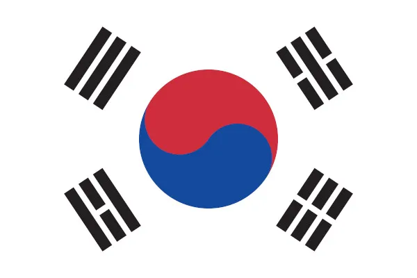
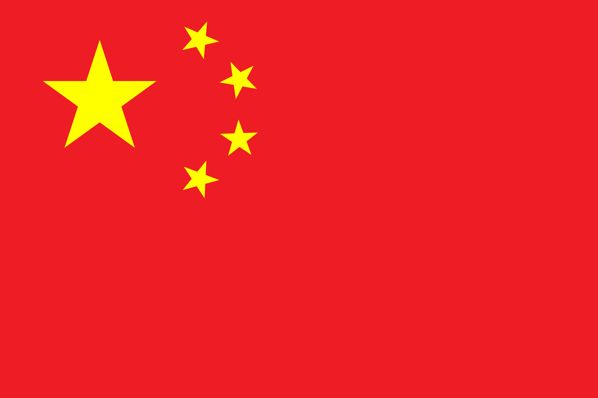
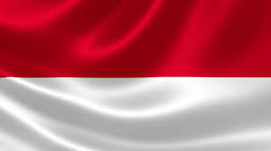
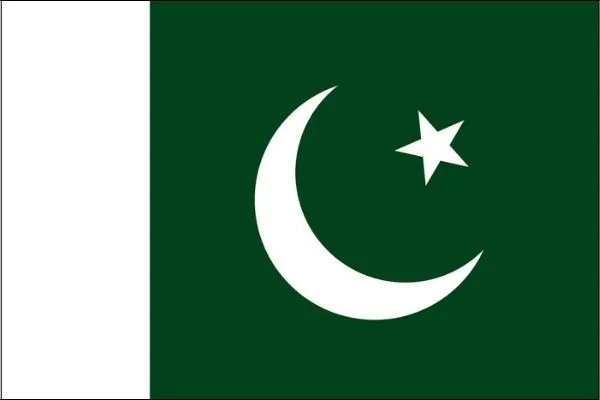

Japão
Terra do Sol Nascente, o Japão é um país insular com rica cultura e história.
Alguns destaques do Japão incluem:
-
Culinária tradicional, como sushi e ramen
Tecnologia de ponta
Belas paisagens naturais, como o Monte Fuji
Coreia do Sul

Península dividida, a Coreia do Sul é um país vibrante com economia em rápido crescimento.
Alguns destaques da Coreia do Sul incluem:
-
K-Pop, música pop coreana que conquistou o mundo
Indústria de tecnologia avançada
Tradições milenares, como a arte marcial Taekwondo
China

Nação mais populosa do mundo, a China é um país com rica história e cultura diversificada.
Alguns destaques da China incluem:
-
Grande Muralha da China, uma das Sete Maravilhas do Mundo
Culinária variada, com diferentes estilos regionais
Crescimento econômico acelerado e forte influência no cenário global
Índia

Segundo país mais populoso do mundo, a Índia é um país com grande diversidade cultural e religiosa.
Alguns destaques da Índia incluem:
-
Taj Mahal, um dos monumentos mais românticos do mundo
Cultura milenar, com diversas religiões e costumes
Culinária rica em especiarias e sabores
Indonésia

Maior arquipélago do mundo, a Indonésia é um país com paisagens paradisíacas e rica biodiversidade.
Alguns destaques da Indonésia incluem:
-
Praias paradisíacas com águas cristalinas
Florestas tropicais com rica vida animal e vegetal
Templos budistas e hindus milenares
Paquistão

País com paisagens montanhosas e rica história, o Paquistão é um importante ator no cenário geopolítico da Ásia.
Alguns destaques do Paquistão incluem:
-
Cordilheira do Himalaia, a maior do mundo
Cultura diversa, com influências do Oriente Médio e da Ásia Central
Arábia Saudita
A Arábia Saudita foi estabelecida em 1932 pelo rei Abd-al-Aziz - também conhecido por Ibs Saud e chamado de Leão de Najd -, que tomou Hejaz da família Hashemita e uniu o país em torno de seu governo familiar.
Alguns destaques da Arábia Saudita incluem:
Arábia Saudita é um país muçulmano asiático, localizado no Oriente Médio, e é um grande produtor/exportador de petróleo. A Arábia Saudita é um país localizado no continente asiático, na região conhecida como Oriente Médio.